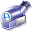

 Take a Tour
BasKet Note Pads is a note-taking application that makes it easy to write down ideas as you think, and quickly find them back later. Organizing your notes has never been so easy.
There is enough of flat note-taking applications that only let you to write text. BasKet Note Pads offers a big expression freedom by collecting any type of data. It is ideal to bring together all the information about a project in one place: you can take images, group needed documents, link them email addresses of the members, link to various interesting websites...
In a few weeks, there will be here several use-cases where BasKet Note Pads shine and is essential.
For the moment, you can view the numerous screenshots or go back to home to learn the key features of BasKet Note Pads.
Getting Things Done with Basket Note Pads
{kind=link}
One of the various ways to use BasKet Note Pads is to implement the "Getting Things Done" method in order to be more organized.
You can get more information by reading the article on Wikipedia or this book summary.
This basket archive you can download will help you getting started quickly with the method. The basket group is ready-to-use, specially made to adapt the Getting Things Done method to BasKet Note Pads, and all baskets have a short introduction text informing you about their goal. Click the left image to get a bigger screen capture of the first basket. To start using Getting Things Done, just save the archive and open it with BasKet Note Pads.
Tip: The top-level basket "GTD" is to be used as an inbox for this method. You can assign a global keyboard-shortcut to it by displaying the basket properties window. Then, whenever you get an idea, you can press this global shortcut, press the Insert. key to add a new entry, type your idea, and close with BasKet Note Pads to return to what you were doing right before. Easy and very fast.